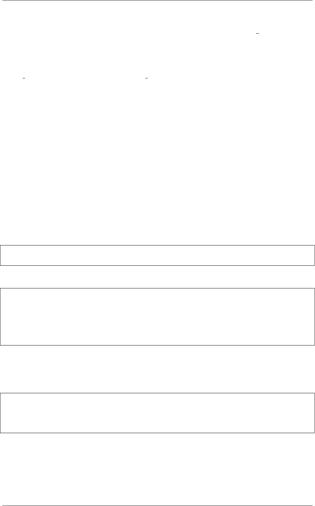

《Python Cookbook》第三版, Release 2.0.0
•如果规则中下一个符号是个特殊符号 (比如 ()，你得查找下一个令牌并确认是一
个精确匹配)。如果不匹配，就产生一个语法错误。这一节中的 expect() 方法
就是用来做这一步的。
•如果规则中下一个符号为一些可能的选择项 (比如 +或-)，你必须对每一种可
能情况检查下一个令牌，只有当它匹配一个的时候才能继续。这也是本节示例中
accept() 方法的目的。它相当于 expect() 方法的弱化版本，因为如果一个匹配
找到了它会继续，但是如果没找到，它不会产生错误而是回滚 (允许后续的检查
继续进行)。
•对于有重复部分的规则 (比如在规则表达式 ::= term {('+'|'-') term }*中)，
重复动作通过一个 while 循环来实现。循环主体会收集或处理所有的重复元素直
到没有其他元素可以找到。
•一旦整个语法规则处理完成，每个方法会返回某种结果给调用者。这就是在解析
过程中值是怎样累加的原理。比如，在表达式求值程序中，返回值代表表达式解
析后的部分结果。最后所有值会在最顶层的语法规则方法中合并起来。
尽管向你演示的是一个简单的例子，递归下降解析器可以用来实现非常复杂的解
析。比如，Python 语言本身就是通过一个递归下降解析器去解释的。如果你对此感兴
趣，你可以通过查看 Python 源码文件 Grammar/Grammar 来研究下底层语法机制。
看完你会发现，通过手动方式去实现一个解析器其实会有很多的局限和不足之处。
其中一个局限就是它们不能被用于包含任何左递归的语法规则中。比如，加入你需
要翻译下面这样一个规则：
items ::=items ','item
|item
为了这样做，你可能会像下面这样使用 items() 方法：
def items(self):
itemsval =self.items()
if itemsval and self._accept(','):
itemsval.append(self.item())
else:
itemsval =[self.item() ]
唯一的问题是这个方法根本不能工作，事实上，它会产生一个无限递归错误。
关于语法规则本身你可能也会碰到一些棘手的问题。比如，你可能想知道下面这个
简单扼语法是否表述得当：
expr ::=factor { ('+'|'-'|'*'|'/') factor }*
factor ::='('expression ')'
|NUM
这个语法看上去没啥问题，但是它却不能察觉到标准四则运算中的运算符优先级。
比如，表达式 "3 + 4 * 5" 会得到 35 而不是期望的 23. 分开使用”expr” 和”term” 规
则可以让它正确的工作。
对于复杂的语法，你最好是选择某个解析工具比如 PyParsing 或者是 PLY。下面
是使用 PLY 来重写表达式求值程序的代码：
4.19. 2.19 实现一个简单的递归下降分析器 75